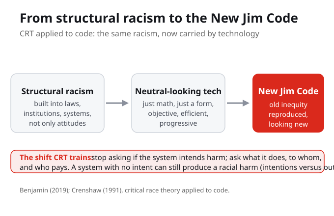
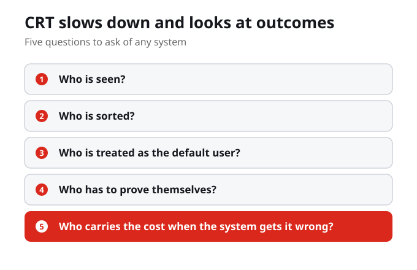

What Do You Know?
1. Critical race theory argues that racism is primarily:
2. Ruha Benjamin's New Jim Code is best understood as:
3. The key analytic shift this week asks you to stop asking whether a system intends harm and instead ask:
4. According to the week, why is the appearance of neutrality the most dangerous part of the New Jim Code:
5. Structural and systemic racism, as defined this week, means racism that:
6. Which scholar's intersectionality, met in Week 1, sharpens the question from who a system harms to who it harms most:
7. An intentions lens and an outcomes lens differ because:
Purpose and Learning Outcomes
Week 2 closes the opening arc of the course by giving you the theory underneath the vocabulary. You met techno-racism and the New Jim Code in Week 1; this week you learn the body of thought they rest on, critical race theory, and you turn in your first Personal Cartography.
By the end of this week you should be able to
- Explain in plain language what critical race theory argues: that racism is ordinary and structural and can operate through systems that look neutral.
- Connect critical race theory to Benjamin's New Jim Code, showing how the New Jim Code applies CRT to technology.
- Use an outcomes-focused, intersectional lens to analyse a real technology from your own Personal Cartography.
- Submit a Personal Cartography that maps at least one moment where a system that claims to be neutral sorts or scores people unequally.
- Distinguish an intentions-based account of a racist system from an outcomes-based account.
Guiding Questions
- Critical race theory says racism is ordinary and structural, not only personal. What changes when you stop asking whether the person behind a system is racist and start asking what the system does, and to whom?
- Benjamin calls technology that reproduces old inequities while looking objective the New Jim Code. Why is the appearance of neutrality the most dangerous part?
- CRT asks us to weigh outcomes, not just intentions. Where in your digital life would an outcomes lens reveal something an intentions lens would miss?
- How does intersectionality (Crenshaw) sharpen the question from who a system harms to who it harms most, and at which overlap?
- Your Personal Cartography is due this week. Which moment on your map best shows a system that claims to be neutral while sorting people unequally?

From Structural Racism to the New Jim Code
Critical race theory begins from a hard point: racism is not only about individual attitudes. It can be built into laws, institutions, and systems that present themselves as neutral. The New Jim Code carries that same structural racism into the digital world, where technology reproduces older racial inequality while looking new, objective, or progressive. The shift this week is to stop asking whether a system intends harm and start asking what it does, to whom, and who pays.
Critical race theory holds that racism can be built into laws, institutions, and systems that look neutral, and the New Jim Code carries that same structural racism into technology that looks new and objective.
When you stop asking whether a system intends harm and start asking what it does, to whom, and who pays, what becomes visible that was hidden before?
Critical race theory starts from a hard but important
Critical race theory starts from a hard but important point: racism is not only about individual attitudes. It can be built into laws, institutions, everyday routines, and systems that present themselves as normal or neutral.
Racism is not only about individual attitudes. It can be built into laws, institutions, everyday routines, and systems that present themselves as normal or neutral.
That matters for technology because technology often arrives
That matters for technology because technology often arrives with the language of objectivity. We hear that an algorithm is just math, a form is just a form, a search result is just a ranking, or a system is just following rules.
Technology often arrives wrapped in the language of objectivity: an algorithm is just math, a form is just a form, a search result is just a ranking, a system is just following rules.
Where in your digital life have you accepted that something is just math or just a ranking without asking who it was built for?

CRT asks us to slow down and look at
CRT asks us to slow down and look at outcomes. Who is seen? Who is sorted? Who is treated as the default user? Who has to prove themselves? Who carries the cost when the system gets it wrong?
CRT asks us to slow down and look at outcomes: who is seen, who is sorted, who is treated as the default user, who has to prove themselves, and who carries the cost when the system gets it wrong.

Benjamin's New Jim Code takes that kind of question
Benjamin's New Jim Code takes that kind of question into the digital world. The point is not that every machine has a hateful intention. The point is that technology can reproduce older forms of racial inequality while looking new, neutral, efficient, or progressive.
The New Jim Code is not about machines with hateful intentions. It is about technology that reproduces older racial inequality while looking new, neutral, efficient, or progressive.
If a system can produce racial harm with no intent to harm, why is the appearance of neutrality the most dangerous part?
As you work through the lecture deck, keep returning
As you work through the lecture deck, keep returning to one question: whose world does this system assume? That question will help you connect CRT, the New Jim Code, and your own Living Cartography.
Keep returning to one question: whose world does this system assume? That question connects critical race theory, the New Jim Code, and your own Living Cartography.
What You Are Learning This Week
Racism Can Be Structural, Not Only Personal
Critical race theory holds that racism is ordinary and structural, built into laws, institutions, and everyday systems, so unequal outcomes recur even when no single person intends them. This is why the course studies design and data, not only attitudes.
The New Jim Code Is CRT Applied to Technology
Benjamin defines the New Jim Code as new technologies that reflect and reproduce existing inequities while being experienced as more objective or progressive. It is the same structural racism, now carried by technology that looks like progress.
Ask About Outcomes, Not Just Intentions
The key analytic shift this week is to stop asking whether a system intends harm and start asking what it does, to whom, and who pays. A system with no intent can still produce a racial harm, and CRT trains you to see it.
Neutrality Is the Newest Disguise
Jim Crow was a sign you could see. The New Jim Crow rebranded racial control as colour-blind law and order. The New Jim Code rebrands it again as objective and efficient. Each disguise is harder to see than the last.
Connections to This Week
In Week 1 you established that technology is not neutral, and you met the vocabulary of techno-racism and the New Jim Code along with Crenshaw's intersectionality. We named the terms.
We give you the body of thought those terms rest on. Critical race theory explains why racism can be structural and operate through systems that look neutral, and the New Jim Code applies that theory to technology. Your first Personal Cartography is due.
From here we move from the theory to measuring it, examining the dimensions of how bias is engineered into systems: intersectional bias, default discrimination, proxy variables, and engineered inequity.
Reflection Corner
Jim Crow was a sign on a door you could see. What some call the New Jim Crow rebranded racial control as colour-blind law and order. The New Jim Code rebrands it again as objective and efficient. Each disguise was harder to see than the last. If neutrality is simply the newest disguise, how will you recognize the next system that wears it, and how much will it have already sorted before anyone can name it?
Your notes save automatically on this device and stay after you close your browser or shut down. Use Save my notes (below) to download a copy you can keep or open on another device.
What You Now Know
A central claim of critical race theory is that systems can:
Benjamin defines the New Jim Code as technologies that reflect and reproduce existing inequities while being experienced as:
The course studies design and data, not only attitudes, because structural racism:
Across Jim Crow, the New Jim Crow, and the New Jim Code, each disguise of racial control was:
What to Do Next
Read the Assigned Readings
Crenshaw (1991), Mapping the margins, and Benjamin (2019), the Introduction to Race After Technology. These give you the founding intersectionality lens and Benjamin's definition of the New Jim Code in her own words.
Work Through the Module
Complete all components on Blackboard, including the Key Concepts, the lecture deck, and the Reflection Corner. As you go, keep asking one question of each example: whose world does this system assume?
Submit Your Personal Cartography
Apply the week to your Living Cartography by mapping at least one moment where a system that claims to be neutral sorts or scores people unequally, using an outcomes-focused, intersectional lens. Due this week through Blackboard.
References
Benjamin, R. (2019). Race after technology: Abolitionist tools for the New Jim Code. Polity Press.
Crenshaw, K. (1991). Mapping the margins: Intersectionality, identity politics, and violence against women of color. Stanford Law Review, 43(6), 1241-1299.